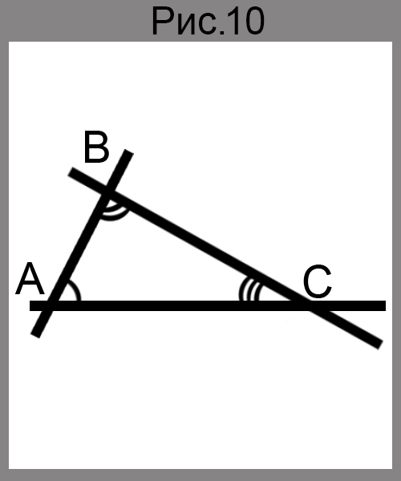

Равные треугольники. Высота, медиана, биссектриса треугольника
Рассмотрим три точки A,B,C, не лежащие на одной прямой. Соединим их отрезками AB,BC,CA. Полученная фигура ограничивает часть плоскости, выделенную на рисунке 9 оранжевым цветом. Эту часть плоскости вместе с отрезками AB,BC и CA называют треугольником.
Точка A,B,C называют вершинами, а отрезки AB,BC,CA - сторонами треугольника.
Треугольник называют и обозначают по его вершмнам. Треугольник, изображенный на рисунке 9, обозначают так: ▲ABC, или ▲BCA, или ▲ACB.
Углы BAC, ABC, BCA (рис.10) называют углами треугольника ABC. В треугольнике ABC, например, угол B называют углом, противолежащим стороне AC, сторону AC - стороной, противолежащей углу B, стороны AB и AC - сторонами, прилежащими к углу A.

Определение
Периметром треугольника называют сумму длин всех сторон.
Периметр обозначают буквой P. Например, для периметра треугольника MNK используют обозначение Pmnk.
Определение
Треугольник называют остроугольным, если все его углы острые(рис.11, а)
Треугольник называют прямоугольным, если один из его углов прямой(рис.12, б)
Треугольник называют тупоугольным, если один из его углов тупой(рис. 13, в)
Определение
Два треугольника называют равным, если их можно совместить наложением.
На рисунке 14 изображены равные треугольники ABC и A₁B₁C₁. Записывают: ▲ABC=▲A₁B₁C₁. Эти треугольники можно совместить так, что вершины A и A₁, B и B₁, C и C₁ совпадут. Тогда можно записать: ∠A=∠A₁, ∠B=∠B₁, ∠C=∠C₁, ∠AB=∠A₁B₁, ∠BC=∠B₁C₁, ∠CA=∠C₁A₁.
Те стороны и те углы, которые совмещаются при наложении треугольников, называют соответственными сторонами и соответственными углами. Так, например, на рисунке 14 стороны AC и A₁C₁, углы A и A₁ - соответственные.
Основное свойство равенства треугольников
Для данного треугольника ABC и луча A₁M существует треугольник A₁B₁C₁, равный треугольник ABC, такой, что AB=A₁B₁, BC=B₁C₁, AC=A₁C₁ и сторона AB₁ принадлежит лучу A₁M, а вершина С₁ лежит в данной полуплоскости относительно прямой A₁M (рис.15)
Теорема
Через точку, не принадлежащую данной прямой, проходит только одна прямая, перпендикулярная данной.
Доказательство
Рассмотрим прямую a и не принадлежащую ей точку O. Предположим, что через точку O проходят две прямые OA и OB, перпендикулярные прямой a (рис.16)
В силу основного свойства равенства треугольников существует треугольник O₁AB, равный треугольнику OAB (рис.17). Тогда ∠OAB=∠O₁AB=90°. Отсюда ∠OAO₁=180°, а значит, точки O,A,O₁ лежат на одной прямой.
Аналогично доказывают, что точки O,B,O₁ также лежат на одной прямой. Но тогда прямые OA и OB имеют две точки пересечения: O и O₁. Но это невозможно. Следовательно, наше предположение неверно. Тогда через точку O проходит одна прямая, перпендикулярная прямой a.
Определение
Две фигуры называют равными, если их можно совместить наложением.
Определение
Перпендикуляр, опущенный из вершины треугольника на прямую, содержащую противолежащую сторону, называют высотой треугольника.
На рисунке 18 отрезок BB₁ и CC₁ - высоты треугольника ABC
Определение
Отрезок, соединяющий вершину треугольника с серединой противолежащей стороны, называют медианой треугольника.
На рисунке 19 отрезок AM - медиана треугольника ABC.
Определение
Отрезок биссектрисы угла треугольника, соединяющий вершину треугольника с точкой противолежащей стороны, называют биссектрисой треугольника.
На рисунке 20 отрезок BL - биссектриса треугольника ABC.
Каждый треугольник имеет три высоты, три медианы и три биссектрисы.
Часто длины сторон треугольника, противолежащих углам A,B,C, обозначают соответственно a,b,. Длины высот обозначают ha,hb,hc, медиана ma,mb,mc, биссектрис - la,lb,lc. Индекс показывает, к какой стороне проведен отрезок (рис.21)